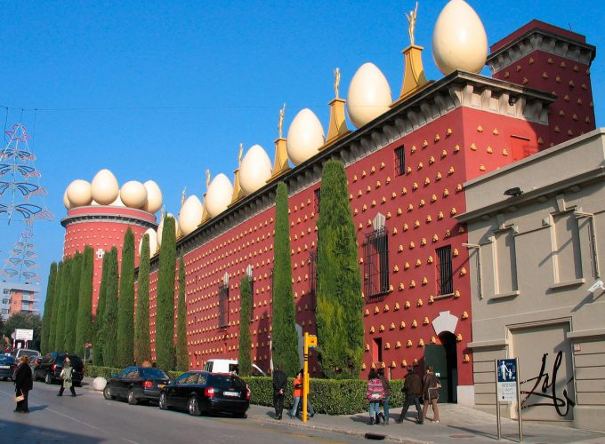
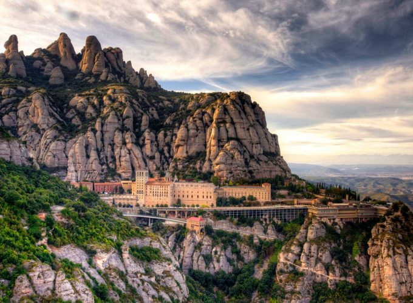

Жирона
Жирона На протяжении многих лет город Жирона был не только центром одной из автономных провинций, но и ментальным центром Каталонии! История его появления и развития традиционна для большинства городов романизации Иберийского полуострова, но начинается она немного раньше — в IV веке до н.э. именно тогда появилось первое устойчивое поселение иберийских племен, которое, пройдя через различные этапы формирования, стало одним из форпостов Римской империи в этой части Испании, а со временем строительство крепости Герунда превратило город в «город тысячи осад», город в «городе тысячи переулков», город, где зародилось всемирно известное религиозное учение Каббалы! Увлекательная история нашего официального гида (только официальные гиды имеют право проводить экскурсии по городу) поможет вам точнее и содержательнее понять, где находится реальность, а где легенды о львицах, мухах, святом Нарциссе, длительном строительстве одного из крупнейших соборов Европы и многом другом. Вам гарантирована как минимум 1-часовая пешеходная экскурсия в сопровождении гида и около 1 часа 30 минут свободного времени! После этого, проведя в пути не более 30-40 минут, мы прибудем в город Фигерас.
Фигерес
Фигерес Именно здесь проявился гений-эксцентрик, мастер кистей и пера, создавший совершенно иные для восприятия полотна, эссе и перформансы, достигший главного, заставивший заговорить о себе и явившийся миру! История гида в музее Сальвадора Дали и Гала (museo Dali i Gala) и за его пределами даст вам точное представление о том, насколько необычным был этот человек, заявивший миру: «...Сюрреализм — это я!...». Традиционно посещение музея делится на две части: — экскурсия по территории (около 45 минут) с гидом, — свободное время в музее (ювелирный зал) (около 2 часов).

Монтсеррат
Монтсеррат Поездка до природного заповедника/монастыря Монтсеррат займет не более 1 часа 30 минут, после чего вы подниметесь на высоту более 700 метров над уровнем моря на поезде Crimallera! Наш опытный гид проведет обзорную экскурсию по самым важным местам монастыря, которая займет не более 30-40 минут, и предоставит вам около 2 часов свободного времени! Свободное время на территории монастыря и в его окрестностях подтвердит вам познавательный рассказ гида о самых важных и известных фактах: - о первых отшельниках VIII века, - о периоде существования монастыря до великого раскола на восточный и западный обряды в XV веке, - об отшельнике монастыря, посетившем его из Колумба во время первого путешествия в Новый Свет, - о паломничестве Игнатия Лойолы, после посещения монастыря принявшего здесь присягу и основавшего орден иезуитов, - о старейшей на его территории школе пения, - о главной реликвии уже бенедиктинского ордена в монастыре Монтсеррат - статуе «Черной» Мадонны. И многое другое.
Барселона
Барселона Вновь встретившись с гидом в заранее оговоренном месте, вы отправитесь в Барселону, где увидите и посетите те основные места, которые входят в традиционную обзорную экскурсию: - Саграда Фамилия (храм Expiatori de la Sagrada Família) без входа, - Триумфальная арка (L'Arc de Triomf) - один из главных проспектов Барселоны де Грасиа (Paseo de Gracia) - дома Антонио Гауди Casa Milà & Casa Batlló - свободное время в районе Каталонии (Plaça de Catalunya)/Старый город (Barrio Gótico) около 2 часов *Отдельный бонус нашей компании - посещение главного собора Святого Креста и Святой Евлалии (La Catedral de la Santa Cruz y Santa Eulalia) - Монжуик и Волшебных фонтанов (Fuente mágica de Montjuic) В конце нашего путешествия, как логическое завершение 12-часовой поездки!
И многие другие экскурсий! Уточните тут